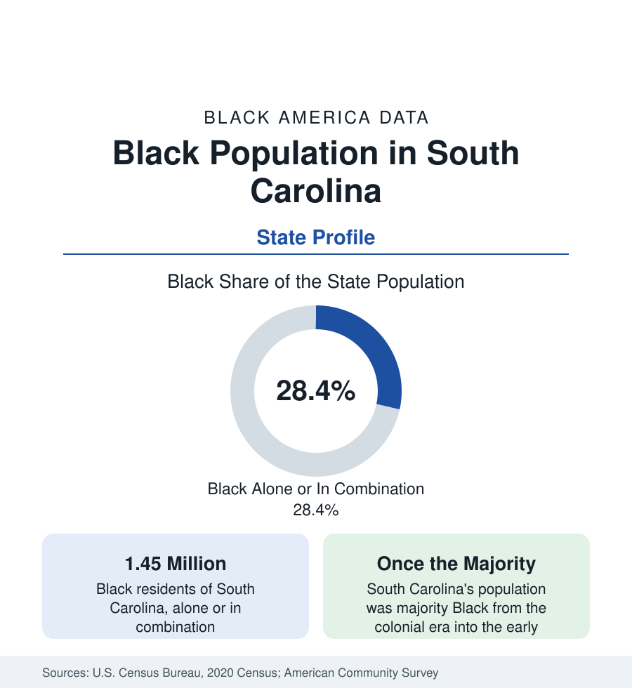

Black Census
Black Population in South Carolina: From Majority to One in Four
About 1.45 million Black South Carolinians — more than one in four residents — in a state that was majority Black into the twentieth century. The census profile.

South Carolina holds about 1.45 million Black residents — Black alone or in combination — more than one in four of its people, with Black alone at about 1.34 million, or 26 percent. The modern share is a fraction of the historical one: South Carolina was a majority-Black state from the colonial era into the early twentieth century, the only state besides Mississippi of which that is true, and its rice coast built one of the most African cultures in North America. This article profiles the population the census records today, in a state growing fast enough to be reshaping its composition again.
The Lowcountry and the Gullah-Geechee Coast
The coastal Lowcountry holds the state's oldest Black geography. Enslaved West Africans, brought in large numbers for their rice-growing knowledge, formed majorities on the sea-island plantations, and their descendants — the Gullah people of South Carolina's coast, kin to Georgia's Geechee — preserved a creole language, foodways, and craft traditions of unusual continuity, now recognized in a federal cultural heritage corridor running the coast. Charleston, the principal port of the domestic slave trade's Atlantic side — a large share of enslaved Africans who survived the crossing entered North America through its harbor — is today roughly a fifth Black within the city, its historic Black neighborhoods pressured by the peninsula's real-estate values, while North Charleston and the inland suburbs hold the larger modern population. Heirs' property — land passed without wills across generations, clouding title — is a documented legal-economic issue of the coastal Black landholding data, tracked in this section's land coverage.
The Midlands and the Upstate
Columbia, the capital at the state's center, is about two-fifths Black and anchors the Midlands with South Carolina's largest Black institutional base: Benedict College and Allen University, the state government workforce, and Fort Jackson's military economy. Orangeburg, an hour south, is the state's HBCU town — home to South Carolina State University and Claflin University, among the oldest Black institutions in the region, in a majority-Black county. The Upstate — Greenville, Spartanburg, Anderson — in the northwest hills, held smaller enslaved populations historically and records the state's lowest Black shares today, though Greenville's Black community is old and its metro is now among the fastest-growing in the state, drawing Black newcomers with the region's manufacturing and logistics boom.
Growth and Return
South Carolina is among the faster-growing states in the nation, and its Black population grows on two currents: the coastal and suburban in-migration of retirees and working families — the Charleston and Myrtle Beach corridors and the Charlotte suburbs that spill across the state line at Fort Mill and Rock Hill — and a return migration of Black households to the Midlands and the coast. The estimates show the state's Black share nonetheless edging downward, because total growth, much of it into the Upstate and the resort coast, is faster still: the Georgia pattern of a rising count inside a slowly declining share, at an earlier stage.
Composition
Black South Carolinians record indicators near the Southern pattern: income and attainment below national Black averages in the rural counties, near them in Columbia and Charleston's suburbs, with the state's Black professional class concentrated in the capital's public and university sectors and in the health systems of the three metros. The foreign-born share is small. The age structure is comparatively old in the rural Black counties of the corridor of the state's midsection — the former plantation belt running from the coast to Columbia — and young in the growth suburbs, the standard Southern dual structure that the county tables are built to display.
Reading the South Carolina Numbers
South Carolina's profile is the series' study in demographic depth: a state whose Black majority lasted into living memory's grandparents, whose African cultural retention is the strongest on the mainland, and whose contemporary figures — 1.45 million people, more than one in four — describe continuity under transformation. The county profiles, from the sea islands to the Upstate, carry the local account.
Charleston and Columbia receive full profiles in the cities section, and the sea-island communities of the coast are treated in the county profiles accompanying this state account.
More in Black Census
The Black Population of the United States: Size, Definitions, and Distribution
The Black population of the United States totals 52.8 million — 15.4 percent of the nation. How the Census Bureau defines and counts the population, and where it lives.
Black Median Household Income in the United States
Black median household income stands at $56,490 in the Census Bureau's annual income report — how the figure is measured, how it compares, and what drives it.
The Black Poverty Rate: Levels, Children, and the Long Trend
The official Black poverty rate is 17.1 percent — against 11.1 percent nationally and 7.7 percent for non-Hispanic White Americans. How poverty is measured and what the data show.
Source: U.S. Census Bureau, 2020 Census; American Community Survey; Population Estimates Program.